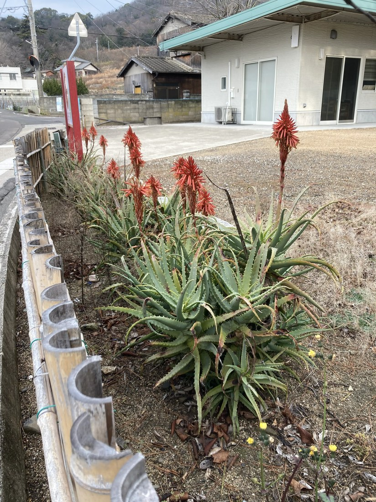

地図を読み込んでいるよ…
🔍 写真も地図も、押しているあいだ拡大して見られるよ（スマホは指を置いてすこし待ってね）。
🌍 の地図＝この子がもともと自生している場所を緑に。南部アフリカ（南アフリカ・モザンビーク・ジンバブエ・マラウイなど、東〜南アフリカの岩場や山地）が原産。日本では丈夫で、道ばたや庭に植えられ、真冬に赤く咲く。
⭐南部アフリカが原産——南アフリカ・モザンビーク・ジンバブエ・マラウイなど、東〜南アフリカの岩場や山地の子。⚠地図は国ごと塗っているけど、もとはその一部の地域だよ。⚠日本は塗っていない——キダチアロエは江戸より前に中国経由で渡ってきた外来の植物で、日本はふるさとじゃない（でも丈夫で、道ばたや庭で冬に赤く咲く）。⭐同じアフリカ生まれの114ゼラニウム（南アフリカ）とふるさとが近いね。
⚠ 地図は国（日本と中国だけ県・省）までしか塗れないから、ほんとうの分布より広く見えていることがあるよ。地図はだいたいの場所。正確なところは、上の文を見てね。
キダチアロエ（木立アロエ）
Aloe arborescens
別名 · イシャイラズ（医者いらず）／英名 krantz aloe／ 原産 · 南部アフリカ／ 見どころ · ⭐真冬に燃えるオレンジ赤の花・木立ちの多肉葉
ツルボラン科 · Asphodelaceae（アロエ属 Aloe）── 図鑑で初めてのアロエ属・074 ニッコウキスゲと同じ科
燻太さん＆りょうさんの見立て「アロエだね。トゲの肉厚の葉は、タコの触手みたい。果肉は癖のない味で、ヨーグルトにぴったり。」──「アロエ」で的中。ただし写真はキダチアロエ（苦い薬用）で、ヨーグルトに合うのはアロエベラの方だよ。
名前と学名の由来 ── arborescens は「木立ち」・アロエは「苦い」
- ⭐属名 Aloe（アロエ）は、アラビア語 alloeh（またはヘブライ語 halal）＝「苦い・にがい液」に由来するといわれる。あの葉のゼリーの苦さが、そのまま名前になっているんだ。
- ⭐⭐種小名 arborescens（アルボレスケンス）＝「木のようになる（木立ち状）」。茎が立ち上がって、大きいものは2〜3mの木のようになる。⭐和名「キダチ（木立）アロエ」は、この学名をそのまま日本語にした名前——学名と和名が、同じことを言っているね。
- ⭐別名「イシャイラズ（医者いらず）」＝昔から、やけど・胃・咳の民間薬に使われてきたことから。
この植物のこと
- ツルボラン科アロエ属の多肉植物。図鑑で初めてのアロエ属（Aloe）だよ。⭐074 ニッコウキスゲと同じツルボラン科（キジカクシ目）——ただしニッコウキスゲは「ワスレグサ亜科」、アロエは「アロエ亜科」。同じ科の、まったくちがう顔なんだ。
- ⭐⭐真冬に咲く：オレンジ赤の細い筒花が、穂のように並ぶ（総状花序）。花は約4cmのユリ形。⭐冬に咲く屋外の花はめずらしく、メジロなどの鳥や虫の、貴重な冬の蜜源になる。写真の、冬枯れの景色に燃える赤い穂が、それだよ。
- ⭐葉は多肉で肉厚、縁にトゲ、反り返る。茎に沿ってつき、木立ち状に立ち上がる。⭐燻太さんの「タコの触手みたいでちょっと怖い」＝この、反り返る細い葉とトゲの並びから、よく分かるね。
- ⭐とても丈夫：寒さ・乾燥に強く、日本の道ばたや庭で、地植えのまま冬越しする（アロエベラよりずっと耐寒性が高い）。江戸時代より前に中国経由で渡来し、広く植えられてきた。
- ⭐「医者いらず」の薬用：ゼリー状の葉肉を、やけど・すり傷に塗ったり、汁を胃痛・咳に。⚠ただし苦い。⚠あくまで昔からの民間療法で、体質や量によっては合わないこともある（薬効を保証するものではない・体調やお薬との兼ね合いに注意）。
コラム ── 「食べるアロエ」との見分け（キダチ vs ベラ）
燻太さんが話してくれた「果肉が癖なくて、ヨーグルトにぴったり」——それは、じつはアロエベラ（Aloe vera）のこと。写真のキダチアロエとは別の種なんだ。よく見る2つのアロエ、こう見分けるよ。
- 🔴キダチアロエ（Aloe arborescens）＝細く長い葉・木立ち状に立ち上がる（2〜3m）・冬にオレンジ赤の花・寒さに強い（屋外で冬越し）・ゼリーは苦い（薬用＝医者いらず）。
- 🟢アロエベラ（Aloe vera）＝幅広で分厚い葉が株もとにロゼット・黄色い花・寒さに弱い（鉢植えが多い）・ゼリーはくせがなく食用（ヨーグルト・ジュース・化粧品）。
- ⭐早見表：葉が「細い→キダチ／幅広→ベラ」、花が「赤→キダチ／黄→ベラ」、寒さに「強くて屋外で冬咲き→キダチ／弱くて鉢→ベラ」。
- どちらも葉のゼリーに成分があるけれど、食べるならベラ、傷に塗る昔ながらの薬ならキダチ。おまけのアロエベラを見つけたら、葉の幅と花の色でくらべてみよう。
同定について ── キダチアロエか、そして「食べる方」との区別
- ⭐真冬のオレンジ赤の穂＋細く反り返るトゲ葉＋木立ち＋屋外の丈夫さ——この組み合わせは、キダチアロエ（Aloe arborescens）ならでは。
- ⚠燻太さんの「果肉が癖なくヨーグルトにぴったり」は、アロエベラの特徴。だからこの写真の子は、キダチアロエ（ゼリーは苦い薬用＝医者いらず）で、食べるアロエ（ベラ）とは別種だよ。「アロエ」でひとくくりにされがちだけど、体のつくりで分かれるんだ。
- 日本で栽培されるキダチアロエは、多くが Aloe arborescens var. natalensis という系統。
物語 ── りょうさんの、冬の贈りもの
冬枯れの道ばた。葉を落とした山と、枯れた草の色ばかりの景色のなかで、この赤い穂だけが、ぽっと燃えている。友人のりょうさんが「これ、アロエだよ」と撮って送ってくれた一枚——そこから、図鑑にアロエ属が新しく加わったよ。寒さにも負けず、いちばん寂しい季節に、いちばん鮮やかに咲く。丈夫で、やさしい薬にもなる。ちょっと怖い見た目のなかに、あったかいものを持っている子だね。りょうさん、燻太さん、ありがとう。
参考：三河の植物観察「キダチアロエ」（ツルボラン科アロエ属・南アフリカ原産／冬にオレンジ赤の総状花序／木立ち状）／ササキアロエ「キダチアロエとアロエベラの違い」（キダチ＝細葉・木立ち・苦い薬用／ベラ＝幅広ロゼット・黄花・くせなく食用）／奈良県薬剤師会「キダチアロエ」（「医者いらず」・葉肉をやけどに、汁を胃痛や咳に用いた民間薬）